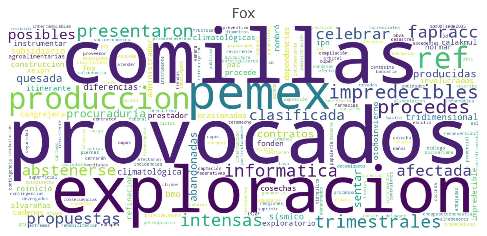
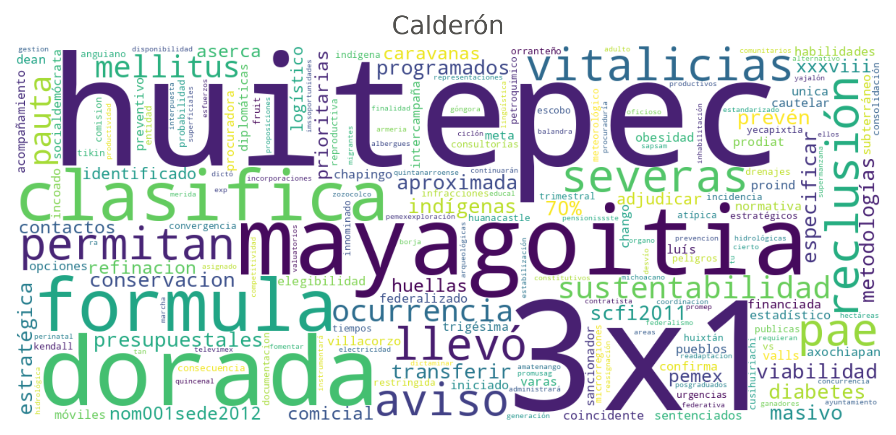
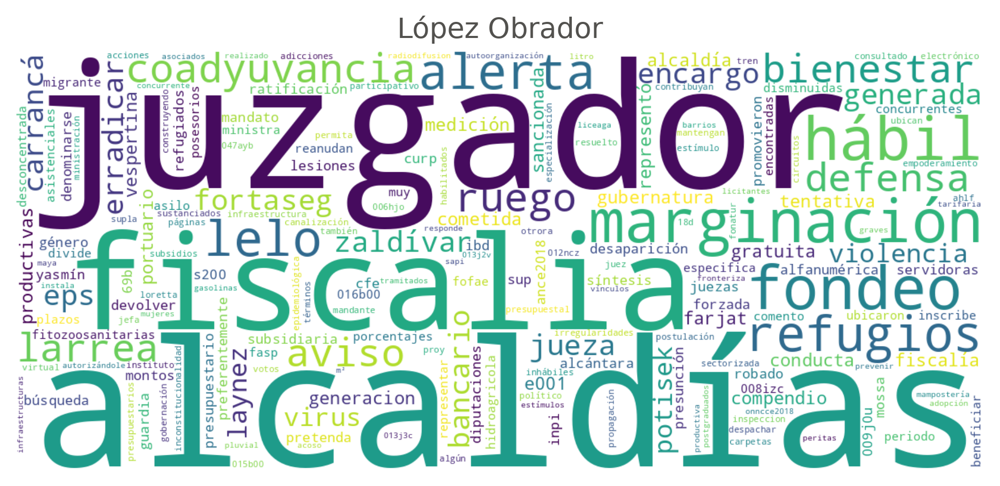

Exploratory Data Analysis of Diario Oficial Titles, 1917–2025
A first exploration of the note archive
Published
July 17, 2026
Abstract
We examine the titles of the 1,221,451 notes published in Mexico’s Diario Oficial de la Federación between January 1917 and December 2025, obtained from the gazette’s own open-data service. The analysis of yearly volume, of the first word of each title, of title length and of vocabulary reveals three major transformations: the expansion of the gazette from 1999 onward, when the systematic cataloguing of procurement announcements and notices doubled the number of notes; the displacement of the classic legal instruments — resoluciones and decretos — by the administrative aviso as the dominant documentary form; and the correlative impoverishment of the title as a descriptor, whose median length fell from about twenty words to six.
Open in Colab
1 The title as an object of study
Every note in the Diario Oficial de la Federación is born with a title. Before there is any digitized full text, OCR or structural markup, the title is the only descriptor that accompanies each document across the entire archive: it says what kind of instrument is being published, who issues it and what it is about. That is why this first exploration deals exclusively with that minimal piece of metadata. If titles allow us to reconstruct, even in broad strokes, the documentary history of the gazette, then they are a solid foundation for the classification and retrieval tasks that will follow.
The material comes from the DOF’s open-data service, from which the daily summary of notes was downloaded for every day between January 1, 1917 and December 31, 2025. The result is 1,221,451 notes spread over 30,486 publication days: the gazette appears, on average, 280 days a year — practically every business day. A methodological caveat is in order: the metadata for the decades before digitization was captured retrospectively by the gazette itself, so the unit note reflects cataloguing criteria that are not constant over time. Part of what follows documents precisely those changes of criteria.
2 How many notes the State publishes
The yearly series of the number of notes divides the recent history of the gazette in two (Figure 1). For most of the twentieth century — from 1917 until the late 1990s — the DOF published on the order of five thousand notes a year, drifting upward toward the end of the century, with swings that track the six-year presidential cycles but no sustained trend. In 1999 the volume jumps from 12,921 to 28,238 notes — more than double — and never comes back: the 2010s settle above thirty thousand notes a year, peaking at 36,041 in 2014. The jump does not reflect a legislative explosion but a change in cataloguing: as will become clear below, this is the moment when procurement announcements and judicial and general notices — which had always existed in the gazette’s pages — begin to be recorded as individual notes in the electronic system.
Figure 1: Notes published in the DOF per year, 1917–2025. Hover on a bar to read the exact count for that year.
Two recent episodes deserve mention. The decline that bottoms out in 2020 — 19,889 notes, down from more than thirty thousand two years earlier — coincides with the change of federal government, its austerity policy and, in 2020, the suspension of activities during the COVID-19 pandemic; the subsequent recovery is only partial. The evening edition, which the archive registers only from the late 1980s onward, remains marginal: 3,021 notes over the whole period, about two in every thousand, although its use has become more frequent in the current decade.
3 The first word: a de facto documentary typology
DOF titles follow a stable convention: they open with the name of the instrument being published — “DECRETO por el que…” (decree whereby…), “ACUERDO que establece…” (agreement establishing…), “AVISO de…” (notice of…) — or, in the announcement sections, with the name of the convening body. The first word of the title thus works as a de facto documentary typology, and its evolution summarizes more than a century of administrative history (Figure 2).
Code
selection = {"RESOLUCION": ("Resoluci\u00f3n", BLUE),"DECRETO": ("Decreto", GREEN),"ACUERDO": ("Acuerdo", MAGENTA),"AVISO": ("Aviso", YELLOW),}piv = first_words.pivot_table(index="year", columns="word", values="notes", aggfunc="sum").fillna(0)share = piv.div(piv.sum(axis=1), axis=0) *100# Vertical offset (in pixels) so labels of series that end at almost the same# level do not overlap.dodge = {"DECRETO": 8, "RESOLUCION": -6}fig = go.Figure()for word, (label, color) in selection.items(): s = share[word] fig.add_trace( go.Scatter( x=s.index, y=s.values, name=label, mode="lines", line=dict(color=color, width=2), hovertemplate="%{fullData.name}: %{y:.1f}%<extra></extra>", ) ) fig.add_annotation( x=s.index[-1], y=s.values[-1], text=label, xanchor="left", xshift=6, yshift=dodge.get(word, 0), showarrow=False, font=dict(color=color, size=11), )style_plotly(fig, yaxis_title="Share of the year's notes (%)")fig.update_xaxes(range=[1917, 2031])fig.update_layout( margin=dict(l=64, r=96, t=32, b=40), legend=dict(orientation="h", yanchor="bottom", y=1.0, xanchor="center", x=0.5),)fig.show( config={"displaylogo": False,"displayModeBar": "hover","modeBarButtonsToRemove": ["lasso2d", "select2d", "autoScale2d"], })
Figure 2: Yearly share of the four most telling first words in DOF titles: resolución (resolution), decreto (decree), acuerdo (agreement) and aviso (notice). Each series is labeled directly on its curve; hover to read every share for a year, or use the legend to isolate one.
For most of the twentieth century the word Resolución opened a large share of the titles — around four in every ten in 1975, and even more in the land-reform decades before that. These were not just any administrative resolutions: they were, overwhelmingly, agrarian resolutions — grants and extensions of ejidos (communal landholdings), deprivations of agrarian rights, creations of new population centers — the daily paperwork of Mexico’s land reform. As land distribution wound down and the 1992 reform of Article 27 of the Constitution closed the era, that documentary mass vanishes: by 2025 resolutions barely reach one percent of the notes. The Decreto, the classic form of presidential action, follows a similar though less abrupt trajectory, from eleven percent in 1975 to little more than one.
The opposite movement belongs to the Aviso. Practically absent for most of the century — under one percent of the titles — it is today the first word of 43.8 percent of the notes, and of 22.1 percent over the whole period. If avisos are added to acuerdos, resoluciones, decretos, convenios, circulares and declaratorias, almost half of the titles in the archive open with one of these seven instruments; the rest correspond mostly to titles that open with the name of an institution — Instituto, Secretaría, Comisión, Pemex — the signature of procurement and job-opening announcements.
4 Titles that shrink
The change in documentary composition left a sharp imprint on the very shape of the titles (Figure 3). For most of the century the median title ran to around twenty words, rising to about twenty-five in the 1970s and 1980s: the typical agrarian resolution named the village, the municipality and the state involved, in addition to the nature of the proceeding. From 1999 onward the median collapses and settles at six words. The explanation is not that legal instruments are named more economically today, but once again composition: the announcements and notices that flood the gazette from then on carry minimal titles — the agency’s name followed by a docket number, as in “INSTITUTO MEXICANO DEL SEGURO SOCIAL - REF:501748” — which drag the distribution down. The mean, more sensitive to the long titles that survive among normative instruments, declines less severely.
Figure 3: Title length in words: yearly mean and median, 1917–2025. Hover to read both statistics for a year.
5 Who fills the gazette’s pages
The archive files each note under a top-level heading that mixes branches of government with fixed sections of the gazette. Its evolution confirms the reading above (Figure 4): for its first seven decades the gazette was, in terms of notes, almost exclusively the bulletin of the Executive Branch. The section for public procurement announcements appears in 1988 and the one for judicial and general notices in 1996; a decade later the two together already account for more than half of each year’s notes. The Executive, without reducing its output in absolute terms, ended up surrounded by the paperwork of public contracting and private-party notices.
Code
PROCUREMENT = ("CONVOCATORIAS PARA CONCURSOS DE ADQUISICIONES, ARRENDAMIENTOS, ""OBRAS Y SERVICIOS DEL SECTOR PUBLICO")groups = {"PODER EJECUTIVO": "Executive Branch", PROCUREMENT: "Procurement announcements","AVISOS JUDICIALES Y GENERALES": "Judicial and general notices",}headings["group"] = headings.heading.map(groups).fillna("Other")comp = headings.pivot_table(index="year", columns="group", values="notes", aggfunc="sum").fillna(0)order = ["Executive Branch", "Procurement announcements", "Judicial and general notices", "Other"]comp = comp[order].div(comp.sum(axis=1), axis=0) *100palette =dict(zip(order, [BLUE, GREEN, MAGENTA, YELLOW]))# One stacked area per section, in the fixed palette order (first trace at the# bottom). A thin white line on each band's top edge is the surface gap that keeps# adjacent fills legible.fig = go.Figure()for name in order: fig.add_trace( go.Scatter( x=comp.index, y=comp[name], name=name, mode="lines", stackgroup="one", fillcolor=palette[name], line=dict(color="white", width=1.2), hovertemplate="%{fullData.name}: %{y:.1f}%<extra></extra>", ) )style_plotly(fig, yaxis_title="Share of the year's notes (%)")fig.update_xaxes(range=[1917, 2025])fig.update_yaxes(range=[0, 100])fig.update_layout( legend=dict( x=0.012, y=0.012, xanchor="left", yanchor="bottom", bgcolor="rgba(255,255,255,0.92)", bordercolor="rgba(0,0,0,0)", ))fig.show( config={"displaylogo": False,"displayModeBar": "hover","modeBarButtonsToRemove": ["lasso2d", "select2d", "autoScale2d"], })
Figure 4: Yearly composition of the notes by the archive’s top-level heading, 1917–2025. Hover on a year to read each band’s exact share; use the legend to isolate a section.
6 The vocabulary of each era
One last look, now at the full lexicon of the titles. Table 1 presents the ten most frequent terms of each decade — Spanish words, since that is the language of the gazette — after removing function words and the administrative docket marker “REF” that accompanies the announcements. The earliest decades, those of the aftermath of the Revolution, speak of water and property: aguas (waters), río (river), propiedad (property), aprovechamiento (usufruct). From the 1930s the vocabulary of land reform takes over — poblado (village), ejido, dotación (land grant), inafectabilidad (exemption from expropriation), municipio (municipality), derechos agrarios (agrarian rights) — and dominates through the 1980s. It fades in the 1990s, when generic institutional terms — nacional, federal, estados unidos mexicanos — take its place. From the 2000s onward the gazette speaks the language of administration: aviso, secretaría, instituto, seguro social, servicios. In little over a century, the DOF went from recording the disputes over water and land in the wake of the Revolution to documenting the day-to-day operation of the state apparatus.
Code
from IPython.display import Markdowndecades =sorted(terms.decade.unique())top = {d: terms[terms.decade == d].head(10).term.tolist() for d in decades}rows = []for i inrange(10): rows.append("| "+str(i +1) +" | "+" | ".join(top[d][i] for d in decades) +" |")header ="| # | "+" | ".join(f"{d}s"for d in decades) +" |"separator ="|---"* (len(decades) +1) +"|"Markdown("\n".join([header, separator] + rows))
Table 1: The ten most frequent terms in DOF titles by decade (function words and the REF docket marker excluded; the 1910s begin in 1917 and the 2020s run through 2025).
#
1910s
1920s
1930s
1940s
1950s
1960s
1970s
1980s
1990s
2000s
2010s
2020s
1
estado
estado
estado
acuerdo
poblado
poblado
municipio
municipio
municipio
aviso
aviso
aviso
2
aguas
aguas
expediente
inafectabilidad
acuerdo
resolucion
resolucion
denominado
aviso
estado
secretaria
nacional
3
senor
senor
resolucion
poblado
resolucion
numero
denominado
poblado
nacional
federal
estado
secretaria
4
rio
rio
poblado
resolucion
inafectabilidad
solicitud
poblado
resolucion
federal
nacional
nacional
instituto
5
propiedad
solicitud
dotacion
estado
numero
agricola
ejido
ubicado
estados
instituto
instituto
estado
6
dia
aprovechar
ejidos
expediente
senor
centro
derechos
reg
unidos
secretaria
federal
federal
7
sesion
presentada
senor
ejidos
solicitud
poblacion
agrarios
acuerdo
acuerdo
pemex
social
social
8
acta
cancelacion
decreto
predio
san
creacion
privacion
ejido
distrito
comision
municipio
acuerdo
9
declaracion
fiscal
san
senor
predio
acuerdo
dotacion
derechos
decreto
social
comision
mexicano
10
solicitud
registro
numero
dotacion
ejido
vecinos
numero
agrarios
mexicanos
produccion
acuerdo
servicios
7 The words that set a year apart
The figures so far read the archive as a whole. A sharper, more political question is which words identify a single year — set it apart from every other year of the gazette. A new administration arrives with its own programs, priorities and turns of phrase, and the daily paperwork of the Diario Oficial registers them almost at once. To surface that, we contrast the vocabulary of one year against the vocabulary of all the others.
This needs the title strings themselves, not the pre-aggregated CSVs the figures above are built from. dofjson.titulos.download_titulos pulls them straight from the notas-archivo release into one compact codNota + titulo + fecha dataset (no local checkout of the raw archive, which keeps the step reproducible on Colab); we then stream it back with microtc’s tweet_iterator, grouping the titles by the year of each note’s fecha — every year the release has, 1917 to date.
Code
# On Colab, install the packages this section needs:# %pip install dofjson microtc wordcloud
Download the titles and group them by year
import timefrom collections import defaultdictfrom dofjson.titulos import download_titulosfrom microtc.utils import tweet_iteratordest = Path("titulos.jsonl.gz")for intento inrange(4):try: download_titulos(dest, log=lambda*_: None)breakexceptException: # transient network errors on the release's many assetsif intento ==3:raise time.sleep(2** intento)titles_by_year = defaultdict(list)for nota in tweet_iterator(str(dest)): year =int(nota["fecha"].split("-")[-1]) titles_by_year[year].append(nota["titulo"])
The contrast is a tf-idf comparison built with two microtcTextModels: one fitted on the target group’s titles (each title a document) and one on every other group’s titles. A term’s inverse document frequency (idf, exposed as token_weight) is high when the term is rare across a model’s documents and low when it is common. Dividing a term’s idf in the rest model by its idf in the target model therefore yields a score that is large exactly when the term is rare in the rest of the archive yet common in the target group — that is, when it identifies the group. We keep accents (del_diac=False), discard one-off vocabulary appearing in four documents or fewer (token_min_filter=4), and discard purely numeric tokens after the fact — the tokenizer still keeps digits (num_option="none"), but a date range or a docket number never identifies a group’s vocabulary, only its archive’s numbering scheme. The same function drives both the by-year contrast below and the by-sexenio one that follows it — only the grouping changes.
Score the terms that identify a group
import refrom microtc.textmodel import TextModelNUMERO = re.compile(r"^\d+$")def pesos_discriminantes(agrupado, clave, **params):"""idf ratio (rest / clave) per shared token: large => identifies `clave`. `agrupado` is any {key: titles} grouping — by year or by sexenio below — and `clave` the one entry being contrasted against every other entry. Purely numeric tokens (dates, docket numbers) are discarded: they never identify a group's vocabulary, only its archive's numbering scheme. """ titulos_clave = agrupado[clave] titulos_resto = []for k, titulos in agrupado.items():if k != clave: titulos_resto.extend(titulos) tm_clave = TextModel(**params).fit(titulos_clave) tm_resto = TextModel(**params).fit(titulos_resto) w_clave = {tm_clave.id2token[i]: tm_clave.token_weight[i] for i inrange(tm_clave.num_terms)} w_resto = {tm_resto.id2token[i]: tm_resto.token_weight[i] for i inrange(tm_resto.num_terms)}return {tok: w_resto[tok] / w_clave[tok]for tok in w_claveif tok in w_resto and w_clave[tok] >0andnot NUMERO.match(tok)}
We apply it to the first full year of the two most recent presidencies — 2019, the first year of Andrés Manuel López Obrador, and 2025, the first year of Claudia Sheinbaum (Figure 5). Each cloud sizes a term by how strongly it identifies its year. Beside the gazette’s ever-present administrative markers (ref, aviso), the year-specific vocabulary comes through: snidrus, fortaseg, electricistas and the LXIV legislature for 2019; niñez, adolescencia, afromexicanas, violencias, simplificación, bienestar and presidenta for 2025 — the programs and priorities each administration carried into the gazette in its first months.
Figure 5: Terms that most identify each year against the rest of the archive, sized by the ratio of their tf-idf idf in the rest of the archive to their idf that year. Top: 2019 (first year of López Obrador); bottom: 2025 (first year of Sheinbaum).
Some of those terms are worth tracing back to real titles, since each reads very differently once you see where it comes from:
probipi is a real 2025 program spelled out in full inside dozens of near-identical titles, e.g. “Convenio de Concertación en el marco del Programa para el Bienestar Integral de los Pueblos Indígenas (PROBIPI), a través del componente denominado apoyos para construcción y ampliación de infraestructura de servicios básicos… que celebran el Instituto Nacional de los Pueblos Indígenas y la Comunidad Indígena de Totomixtlahuaca, Estado de Guerrero.”
afromexicanas shows up across dozens of 2025 titles on its own, not just inside PROBIPI’s boilerplate, e.g. “Acuerdo por el que se actualiza el Catálogo Nacional de Pueblos y Comunidades Indígenas y Afromexicanas, expedido y publicado el 9 de agosto de 2024.”
8 The words that set a sexenio apart
Mexican presidents have governed in fixed six-year terms — sexenios — since Lázaro Cárdenas (1934–1940). Grouping the titles by sexenio instead of by calendar year, and applying the very same pesos_discriminantes contrast, surfaces the vocabulary that sets an administration apart from the whole rest of the gazette. We look at four recent terms one at a time — Ernesto Zedillo, Vicente Fox, Felipe Calderón and Andrés Manuel López Obrador — each contrasted against every other title in the release: the other sexenios (including Peña Nieto’s and Sheinbaum’s, not shown) and everything before Zedillo, all folded into “the rest”, so no note is left out of the comparison. Since 2024 the start of the term moved from December 1 to October 1 (a 2014 constitutional reform), which is why López Obrador’s term ends two months short of six years.
Group the titles by presidential sexenio
import datetime as dtSEXENIOS = [ ("Zedillo", dt.date(1994, 12, 1), dt.date(2000, 11, 30)), ("Fox", dt.date(2000, 12, 1), dt.date(2006, 11, 30)), ("Calderón", dt.date(2006, 12, 1), dt.date(2012, 11, 30)), ("Peña Nieto", dt.date(2012, 12, 1), dt.date(2018, 11, 30)), ("López Obrador", dt.date(2018, 12, 1), dt.date(2024, 9, 30)), ("Sheinbaum", dt.date(2024, 10, 1), dt.date(2030, 9, 30)),]def sexenio_de(fecha):"""A note's sexenio, from its own `fecha`; anything earlier than Zedillo falls into "otros", so it still counts as part of "the rest" below.""" d = dt.datetime.strptime(fecha, "%d-%m-%Y").date()for nombre, inicio, fin in SEXENIOS:if inicio <= d <= fin:return nombrereturn"otros"titles_by_sexenio = defaultdict(list)for nota in tweet_iterator(str(dest)): titles_by_sexenio[sexenio_de(nota["fecha"])].append(nota["titulo"])
The same pesos_discriminantes function from above does the work: it neither knows nor cares whether its grouping is by year or by sexenio, only that titles_by_sexenio maps each sexenio’s name to its titles. A small helper draws one sexenio’s word cloud, and the four figures below call it in turn.
Figure 6: Terms that most identify Ernesto Zedillo’s sexenio (1994–2000) against the rest of the archive.
Code
nube_sexenio("Fox")

Figure 7: Terms that most identify Vicente Fox’s sexenio (2000–2006) against the rest of the archive.
Code
nube_sexenio("Calderón")

Figure 8: Terms that most identify Felipe Calderón’s sexenio (2006–2012) against the rest of the archive.
Code
nube_sexenio("López Obrador")

Figure 9: Terms that most identify Andrés Manuel López Obrador’s sexenio (2018–2024) against the rest of the archive.
9 What comes next
This exploration deliberately confined itself to the shallowest metadata in the archive, and even so the titles sufficed to date the digitization of the gazette, to measure the twilight of the land reform and to document the bureaucratization of its content. The tf-idf contrast behind those word clouds — by year and by presidential sexenio — is a first step toward the next installments: the automatic classification of the documentary types that the first word only approximates, and the full text of the notes, whose conversion to Markdown — with the nota2md and dof2md packages, now available on PyPI — is under way.
Methodological note
The data comes from the DOF’s open-data JSON service, queried day by day between January 1, 1917 and December 31, 2025. The aggregates behind the figures and the table are produced by website/scripts/aggregate_titles.py and are versioned alongside this document, so the page can be rebuilt without the raw archive; when the notebook runs outside the repository (for example on Google Colab) it fetches them directly from GitHub. For the lexical analysis, terms were lowercased and stripped of accents, and words shorter than three characters, Spanish function words and the “REF” docket marker were discarded.
The word clouds are the one part of this page not built from those CSVs: they need the individual title strings, which dofjson.titulos.download_titulos fetches from the notas-archivo release at run time (the daily index only, never the note contents), grouped by year and by presidential sexenio, before the same pesos_discriminantes function fits, for each group, a tf-idf model of that group against every other one — sexenio comparisons run against the whole release, with everything before Zedillo (1994) folded into “the rest”. It is the only step that reaches beyond the committed aggregates.
This exploration was carried out by the LegalIA team together with Claude, Anthropic’s coding assistant, through Claude Code: the assistant implemented the aggregation script that tokenizes and counts the titles, the download-and- tf-idf pipeline behind the by-year and by-sexenio word clouds, produced the figures and drafted the accompanying analysis. The authors verified the resulting numbers against the archive and are responsible for the interpretations advanced here.